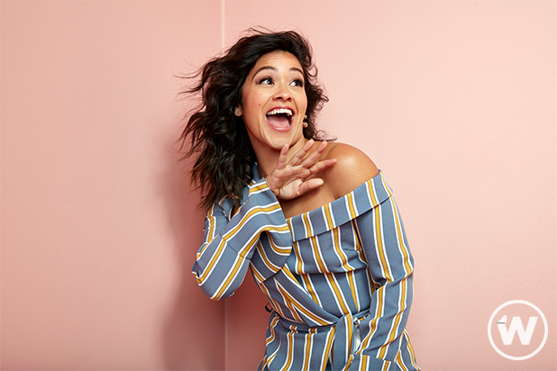

About Me
I am Jhansi Kesireddy. I am from Telangana, India. I came to the United States to study right after my high school. I like to travel a lot and the US has a lot of cool places to visit, so that is something I really love about here.
Education: I finished my high school in India and came to the US for college. I am an IT Application Development major at Missouri State University. I was originally supposed to graduate this May, but because I changed my major a 100 million times, I will be graduating this December. I plan to do PhD degree upon graduation. I am interested in researching more about Cybersecurity topics.
Work Experience: I currently work as a Computer Lab Assistant for Missouri State University. I love my job a lot. I get to meet different people everyday. I get to juggle with computers and other lab machines. I will be working for American National this summer, so I am excited about that.
Family: My parents live in India. I have a younger sister who is in high school, who also lives in India. They visit me here in summers sometimes. We as a family travel a lot too. Usually, in India, there is belief that women cook better than men, but in our family, my dad cooks amazing food.